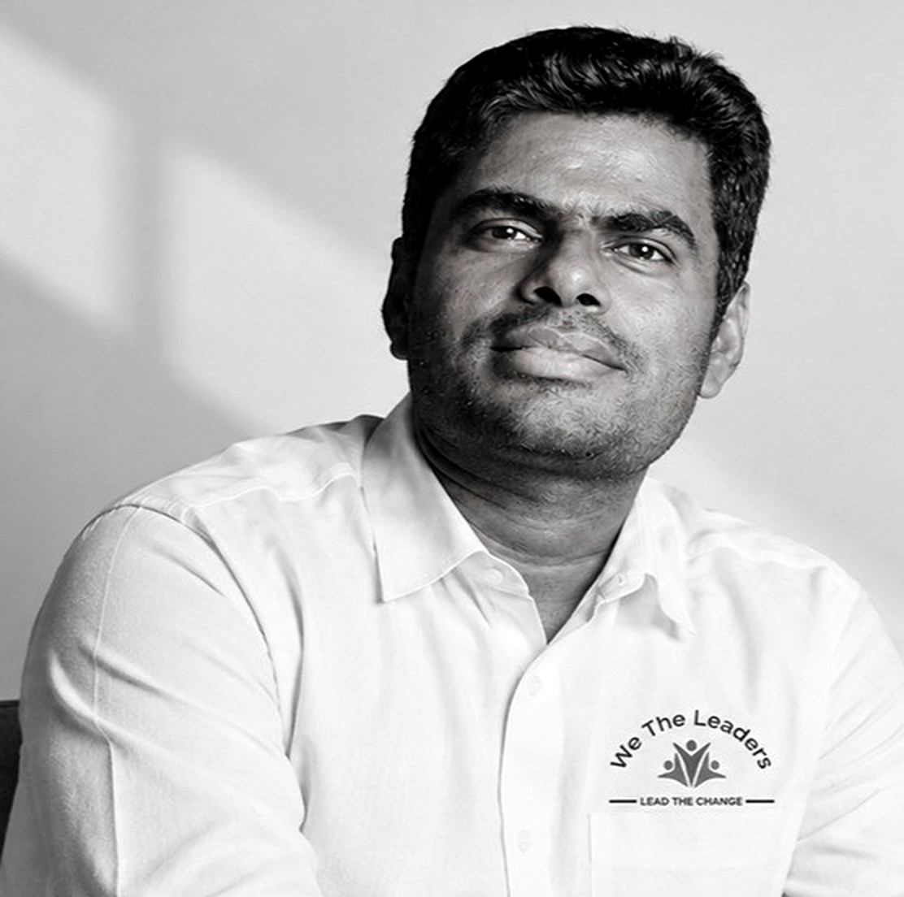
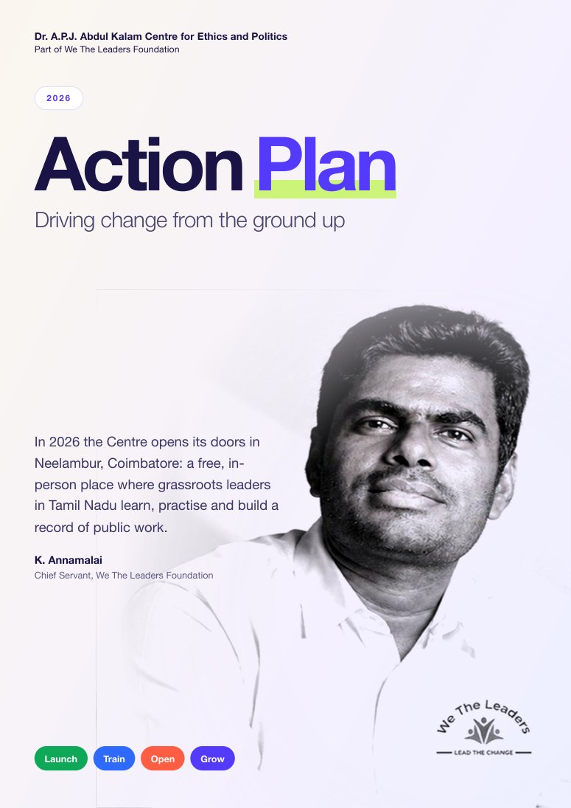

Launch the Centre
Open our doors in Neelambur, Coimbatore on 15 October, Dr. A.P.J. Abdul Kalam’s birthday, with members of his family joining us.
Action Plan 2026
In 2026 the Centre opens its doors in Neelambur, Coimbatore: a free, in-person place where grassroots leaders in Tamil Nadu learn, practise and build a record of public work.

Priorities
Open our doors in Neelambur, Coimbatore on 15 October, Dr. A.P.J. Abdul Kalam’s birthday, with members of his family joining us.
Begin the journey with the 2-Day Foundation Course, then the 4-Week Leadership Academy and the 100-Day Public Problem-Solving Lab. All free.
Every toolkit, collection and glossary entry stays free to read, in Tamil and English, with no form to fill.
Back community action, start college chapters, and help grassroots leaders find each other.
Timeline
Dates we can confirm today. Everything else is announced to the waiting list first.
Dr. A.P.J. Abdul Kalam’s birthday. Venue and time announced soon.
Dates go to the waiting list first.
Across Tamil Nadu. Dates announced soon.
Join the waiting list. Read the toolkits any time.
Strategy
Who rises will be decided by the work, not by who you know. Every programme is free, the whole journey is published, and women and under-35s are named priority groups.
Work toward a trained, named and accountable leader in every ward of Tamil Nadu, district by district. Uncovered wards are shown as uncovered.
Colleges, trusts, CSR programmes, fellow movements and diaspora supporters can help us reach more wards, without changing who the programme is for.

Take it with you
A five-page, full-colour summary you can share, print or forward: the priorities, the year at a glance, our strategy and how to take part.
Download PDFPDF · 5 pages · about 1 MB · English and Tamil